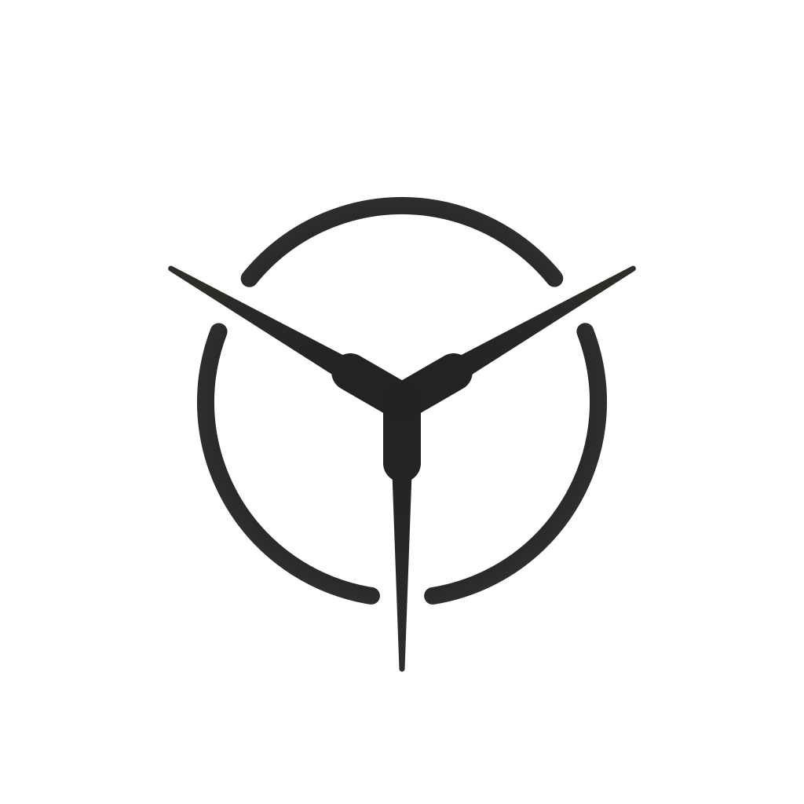
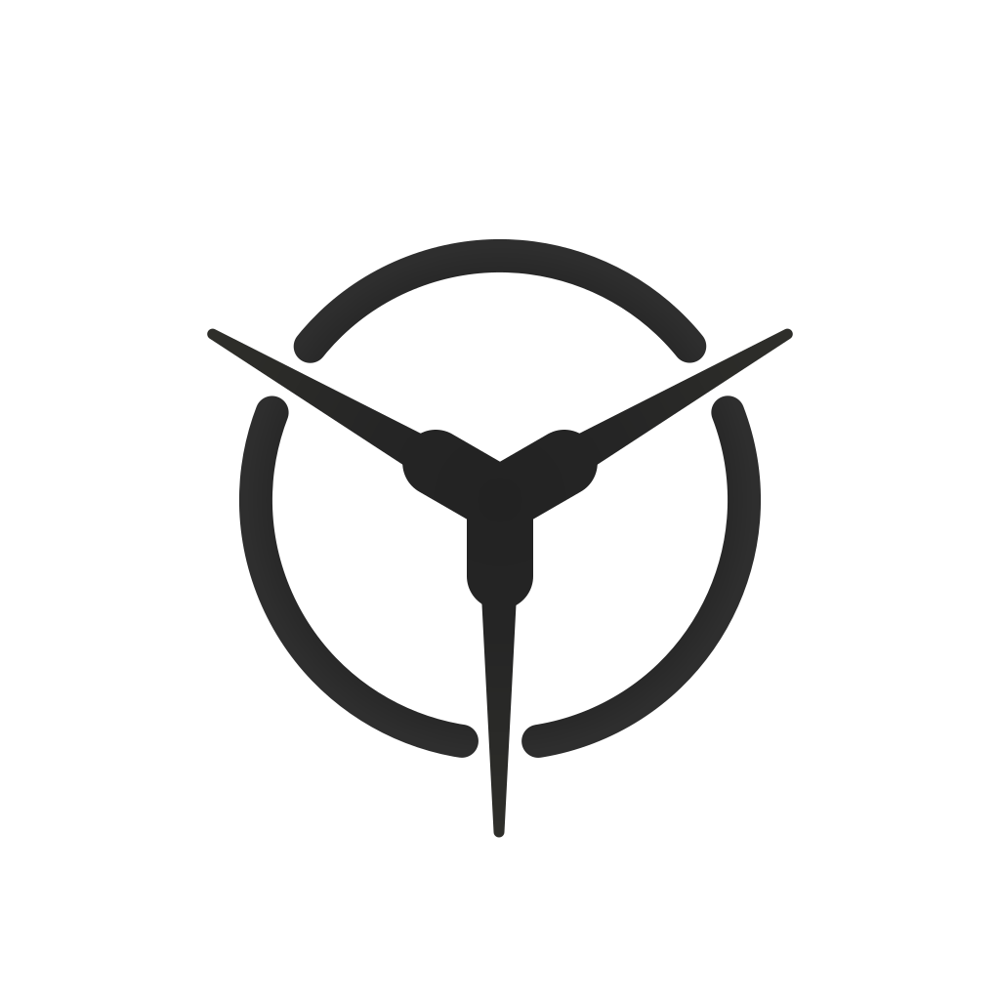

yaokit logo - v5 vs v6
第六版保持 v5 的 Y 型汇流骨架和开口外环，在上一稿基础上再整体加粗一档，让外环和中心都更压得住画面。
v5 - 收窄根部的轻量版本
外环 22px，汇流核 48px，三条射线根部更克制

v5 基线v6 - 整体再厚一档
外环、汇流核和分支继续同步增粗，构图和对轴关系保持不变

v6 迭代
v5 -> v6 变更：
外环从
stroke-width=22 提到 34，中心汇流核从 48 提到 68。
三条分支体也同步加粗：下分支根部半宽从 13 调到 18，上分支根部半宽从 15 调到 20，
尖端总宽从 7px 提到 11px。同时把中心柔化遮罩半径从 27 调到 35，
避免加粗后中心节点显得过闷。